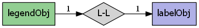
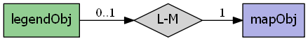

mapscript.legendObj¶
- class mapscript.legendObj¶
The LEGEND object
Overview
The legendObj has the following relationships:
 Attributes
heightint Legend height
imagecolorcolorObjLegend background color - see IMAGECOLORkeysizexint Width in pixels of legend keys - see KEYSIZE
keysizeyint Height in pixels of legend keys - see KEYSIZE
keyspacingxint Horizontal padding around keys in pixels - see KEYSPACING
keyspacingyint Vertical padding around keys in pixels - see KEYSPACING
labelmapmapObjimmutable Instances of legendObj are always are always embedded inside the mapObjoutlinecolorcolorObjKey outline color, -1 for no outline - see OUTLINECOLORpositionint Used for embedded legends, see POSITION
postlabelcacheint
MS_TRUE,MS_FALSE- see POSTLABELCACHEstatustemplatechar See TEMPLATE
thisownThe membership flag
transparentint Allows transparency for an embedded legend - see TRANSPARENT
widthint Legend width
Methods
- convertToString() char[ソース]¶
Output the
legendObjobject as a Mapfile string. Provides the inverse option forlegendObj.updateFromString().
- updateFromString(snippet: char) int[ソース]¶
Update a
legendObjfrom a string snippet. ReturnsMS_SUCCESSorMS_FAILURE